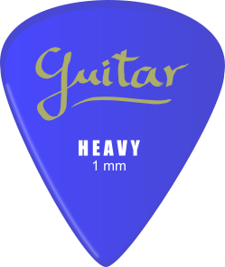

Das Unternehmen
Über ToneForge
ToneForge ist ein Wiener Start-up, das aus der täglichen Arbeit mit digitalen Audio-Workstations und Gitarren-Prozessoren entstanden ist. Unser Fokus: sofort einsetzbare, mix-ready Presets, die den Workflow im Homerecording deutlich vereinfachen.
Unsere Markenformen
ToneForge tritt in drei eigenständigen Markenformen auf. Wortmarke und Wortbildmarke gelten gemäß Aufgabenstellung als eine Markenform.
Wortmarke: „ToneForge"
„Tone" steht für den Gitarrenton, „Forge" für den Prozess des Schmiedens und Erschaffens. Der Name beschreibt präzise, was wir tun: Gitarrensounds systematisch formen.
ToneForge
Bildmarke: Das Wave-Plektrum
Das Logo kombiniert das klassische Werkzeug des Gitarristen (Plektrum) mit dem visuellen Symbol digitaler Signalverarbeitung (Audio-Wellenform). Form und Funktion in einem Zeichen.

Hörmarke: Der Ambient Swell
Ein kurzer, atmosphärischer Gitarren-Akkord, bearbeitet mit Reverb und Delay. Das akustische Erkennungszeichen von ToneForge – unverwechselbar und stimmungsvoll.
Nizza-Klassifikation
Unsere Marken sind den folgenden Nizza-Klassen zugeordnet:
| Klasse 9 | Herunterladbare Computersoftware; aufgezeichnete Ton-, Bild- und Datendateien; digitale Audio-Presets und Impulse Responses (Hauptklasse). |
|---|---|
| Klasse 41 | Online-Bereitstellung nicht herunterladbarer Audioinhalte; Schulungs- und Tutorial-Material rund um Homerecording. |
| Klasse 42 | Design und Entwicklung von Computersoftware; technologische Beratung im Bereich digitaler Audio-Signalverarbeitung. |
Markenrechtliche Prüfung
Um Markenrechtsverletzungen auszuschließen, wurden folgende Maßnahmen getroffen. Die Recherche erfolgte über EUIPO eSearch, TMview und Madrid Monitor.
- Wortwahl: Es wurden keine geschützten Begriffe von Hardware-Herstellern (z. B. Fender, Gibson, Fractal, Kemper) verwendet. Eine Suche nach „ToneForge" in Klasse 9 ergab keine kollidierenden EU-Eintragungen im Bereich Musiksoftware.
- Bildwahl: Das Logo basiert auf einer generischen Plektrum-Form und bildet keine geschützten Produktdesigns ab. Die Grafik entstammt Pixabay (Pixabay-Lizenz, kommerzielle Nutzung erlaubt).
- Farbwahl: Das Akzent-Orange (#E8521A) ist keiner bekannten Farbmarke im Bereich Musiksoftware zugeordnet.
- Formwahl: Die Plektrum-Form ist als generische Form im Bereich Musikzubehör nicht schutzfähig und nicht eingetragen.
- Positionswahl: Logo-Platzierung links und Navigation rechts folgt einer allgemein üblichen Konvention und verletzt keine Positionsmarken.
Das Unternehmen
| Name | ToneForge Audio GmbH |
|---|---|
| Gründung | 2026 |
| Standort | Wien, Österreich |
| Mitarbeitende | 3 (Kleinstunternehmen gem. § 6 BaFG) |
| Zielgruppe | Homerecording-Gitarristen, Live-Musiker, Produzent:innen |
| Geschäftsmodell | Einmalkauf (Royalty-free Digital Download) |